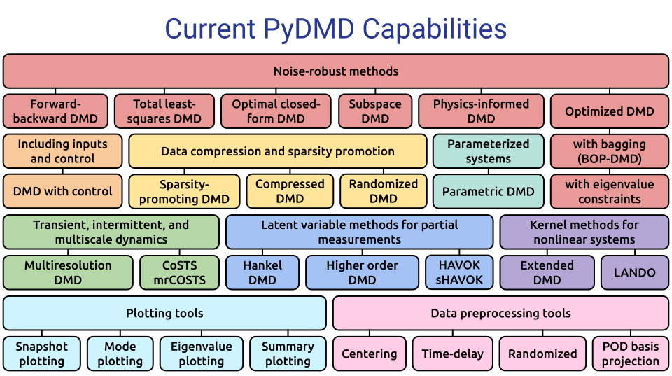

Welcome to PyDMD’s documentation!¶
Python Dynamic Mode Decomposition.
Description¶
PyDMD PyDMD is a Python package designed for Dynamic Mode Decomposition (DMD), a data-driven method used for analyzing and extracting spatiotemporal coherent structures from time-varying datasets. It provides a comprehensive and user-friendly interface for performing DMD analysis, making it a valuable tool for researchers, engineers, and data scientists working in various fields.
With PyDMD, users can easily decompose complex, high-dimensional datasets into a set of coherent spatial and temporal modes, capturing the underlying dynamics and extracting important features. The package implements both standard DMD algorithms and advanced variations, enabling users to choose the most suitable method for their specific needs. These extensions allow to deal with noisy data, big dataset, control variables, or to impose physical structures.
PyDMD offers a seamless integration with the scientific Python ecosystem, leveraging popular libraries such as NumPy and SciPy for efficient numerical computations and data manipulation. It also offers a variety of visualization tools, including mode reconstruction, energy spectrum analysis, and time evolution plotting. These capabilities enable users to gain insights into the dominant modes of the system, identify significant features, and understand the temporal evolution of the dynamics.
PyDMD promotes ease of use and customization, providing a well-documented API with intuitive function names and clear parameter descriptions. The package is actively maintained and updated, ensuring compatibility with the latest Python versions and incorporating user feedback to improve functionality and performance. We provide many tutorials showing the characteristics of the software.
{kind=link}
Installation¶
PyDMD requires requires numpy, scipy, matplotlib, future, sphinx (for the documentation) and pytest (for local test). The code is tested for Python 3, while compatibility of Python 2 is not guaranteed anymore. It can be installed using pip or directly from the source code.
Installing via PIP¶
PyDMD is available on PyPI, therefore you can install the latest released version with:
pip install pydmd
To uninstall the package:
pip uninstall pydmd
Installing from source¶
The official distribution is on GitHub, and you can clone the repository using
git clone https://github.com/PyDMD/PyDMD
To install the package just type:
pip install -e .
Developer’s Guide¶
Tutorials¶
We made some tutorial examples. Please refer to the official GitHub repository for the last updates. Here the list of the exported tutorials:
Tutorial 1 - Here we show a basic application of the standard dynamic mode decomposition on a simple system in order to reconstruct and analyze it.
Tutorial 2 - Here we show a more complex application of the standard dynamic mode decomposition on a 2D system evolving in time, focusing on the advanced settings the class provides.
Tutorial 3 - Here we show the application of the multi-resolution dynamic mode decomposition on a system that contains transient time events.
Tutorial 4 - Here we show the application of the compressed dynamic mode decomposition in order to decrease the computational cost required by decomposition.
Tutorial 5 - Here we show the forward-backward dynamic mode decomposition on a dataset coming from a fluid dynamics problem.
Tutorial 6 - Here we show the higher order dynamic mode decomposition applied on 1D snapshots.
Tutorial 7 - Here we show the dynamic mode decomposition incorporanting the effect of control, on a toy dataset.
Tutorial 8 - Here we show the comparison between standard DMD and the optimal closed-form DMD.
Tutorial 9 - Here we show the sparsity-promoting DMD on a dataset coming from an heat transfer problem.
Tutorial 10 - Here we apply Parametric DMD (in two possible approaches) to a simple toy problem.
Developers Tutorial 1 - Here we show the procedure to extending PyDMD by adding a new version of DMD.
References¶
To implement the various versions of the DMD algorithm we follow these works:
Kutz, Brunton, Brunton, Proctor. Dynamic Mode Decomposition: Data-Driven Modeling of Complex Systems. SIAM Other Titles in Applied Mathematics, 2016.
Gavish, Donoho. The optimal hard threshold for singular values is 4/sqrt(3). IEEE Transactions on Information Theory, 2014.
Matsumoto, Indinger. On-the-fly algorithm for Dynamic Mode Decomposition using Incremental Singular Value Decomposition and Total Least Squares. 2017.
Hemati, Rowley, Deem, Cattafesta. De-biasing the dynamic mode decomposition for applied Koopman spectral analysis of noisy datasets. Theoretical and Computational Fluid Dynamics, 2017.
Dawson, Hemati, Williams, Rowley. Characterizing and correcting for the effect of sensor noise in the dynamic mode decomposition. Experiments in Fluids, 2016.
Kutz, Fu, Brunton. Multiresolution Dynamic Mode Decomposition. SIAM Journal on Applied Dynamical Systems, 2016.
Erichson, Brunton, Kutz. Compressed dynamic mode decomposition for background modeling. Journal of Real-Time Image Processing, 2016.
Le Clainche, Vega. Higher Order Dynamic Mode Decomposition. Journal on Applied Dynamical Systems, 2017.
Funding¶
A significant part of PyDMD has been written either as a by-product for other projects people were funded for, or by people on university-funded positions. There are probably many of such projects that have led to some development of PyDMD. We are very grateful for this support!
Beyond this, PyDMD has also been supported by some dedicated projects that have allowed us to work on extensions, documentation, training and dissemination that would otherwise not have been possible. In particular, we acknowledge the following sources of support with great gratitude: H2020 ERC CoG 2015 AROMA-CFD project 681447 (P.I. Gianluigi Rozza), and the FSE HEaD project Bulbous Bow Shape Optimization through Reduced Order Modelling.